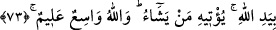

73. Sizin dininize uyanlardan başka hiçbir kimseye inanmayın.” (Rasûlüm!) De
ki: Doğru yol ancak Allah’ın yoludur. Yine (onlar, kendi aralarında şöyle dediler:)
“Size verilenin benzerinin başka herhangi bir kimseye verildiğine, yahut Rabbinizin
huzurunda onların size karşı deliller getireceklerine de (inanmayın).” De ki: Lütuf
ve ihsan Allah’ın elindedir. Onu dilediğine verir. Allah’ın rahmeti geniştir ve O her
şeyi hakkıyla bilir.
“Sizin dininize uyandan başkasına inanmayın.” Yani, Muhammed’in dînine uyarak
müslüman olanlara kalbî tasdikle inanmayın, kendi dindaşlarınıza güvenin. Az önce adı
geçen grup, tâbîlerine “günün önünde Kur’ân’a îman etmiş gibi görünün.” dedikten
sonra şöyle devam etmişlerdir: “İslâm’ın ve Kur’ân’ın hak olduğunu tasdiklemeyin, ama
bunu da müslümanlara çaktırmayın, sadece kendi dindaşlarınıza söyleyin.” Ey
Muhammed bu elebaşılara “De ki: Hak yol, Allah’ın yoludur.” O bu hidâyetle
dilediğini îmana iletip îman üzere sabit-kadem kılar. Hidâyet ve tevfîk Allah’dan
olduğuna göre, ne hîleleriniz, ne de komplolarınız zarar verebilir. Bu cümle, kitap
ehlinin hîlelerinin üzerinde durmaya değmez şeyler olduğunu göstermek için getirilmiş
bir cümle-i itiraziyyedir. “Başka hiçbir sebeple değil, sırf” size verilen kitap ve ilim
üstünlüğünün bir benzeri başka birisine de verildiği için böyle şeyler söylüyor ve
birtakım tuzaklar hazırlıyorsunuz. Şu söylediklerinizi size söyleten sırf içinizdeki
hasettir.
“Veya Rabbinizin huzurunda aleyhinize deliller getireceklerinden ötürü mü?”
cümlesi yukarıdaki “bir kimseye verilmiş olduğundan” cümlesine mâtuftur. “Bütün
bunları, bir bundan dolayı bir de, birilerine size verilen kitap gibi bir kitap verilerek
küfrünüze karşı, deliller getireceklerinden ötürü mü yapıyorsunuz?” demektir. Kıyâmet
günü Rabbinizin huzurunda sizi delil ile susturabilecekler. Çünkü Allah’ın kendisine
vahyettiği bir kişinin Rabbi katında muhaliflere karşı delil getirmesi mutlaka şarttır. De
ki: “Şüphesiz lütuf,” kitap ve ilim vermek hidâyet ve başarıya ulaştırmak “Allah’ın
elindedir.” Kudret ve meşîetindedir. Onu kullarından dilediğine verir. Allah’ın lütfu
geniştir, gücü tamdır, bilendir, ilmi tamdır. Tam bir kudrete sahip olduğu için, istediği
kulunu, istediği şekilde üstün kılabilir. Eksiksiz bir ilme sahip olduğu için de bütün
fiilleri ancak hikmet ve doğruluk üzeredir.
74. Rahmetini dilediğine ayırır. Allah üstün lütuf sahibidir.
Bu iki cümle de, önce geçen ifadelerin devamı mahiyetinde olup bunların mânasını
kuvvetlendirmektedir.